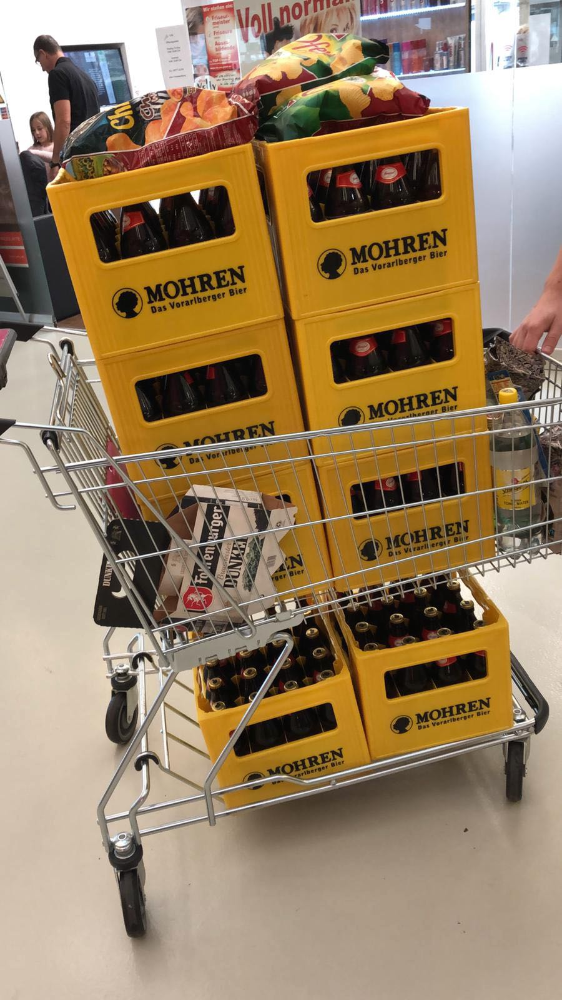
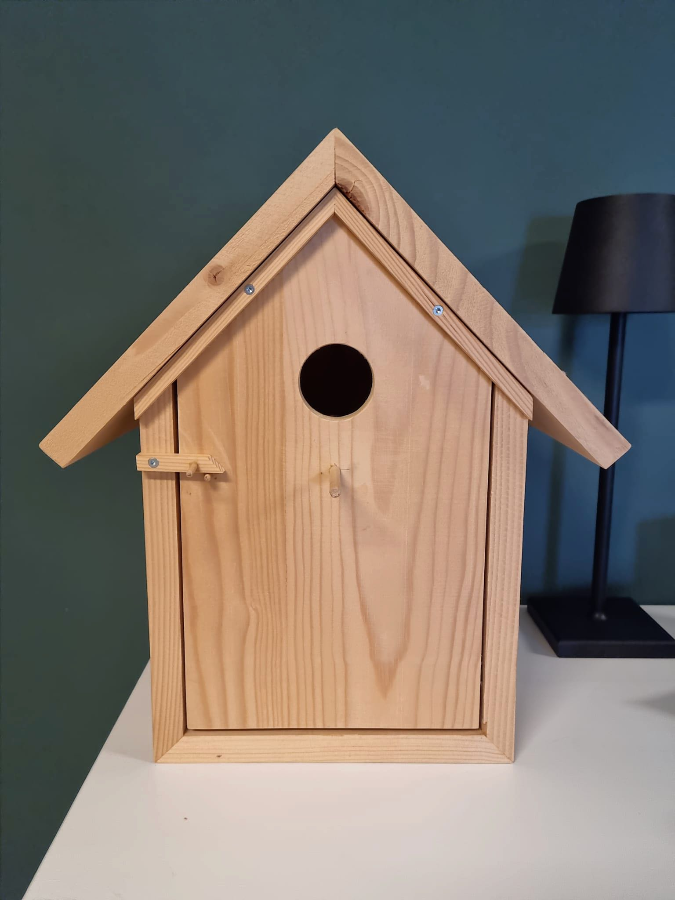
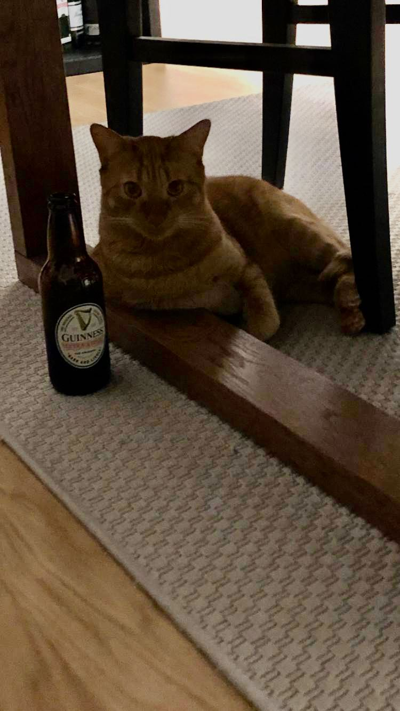
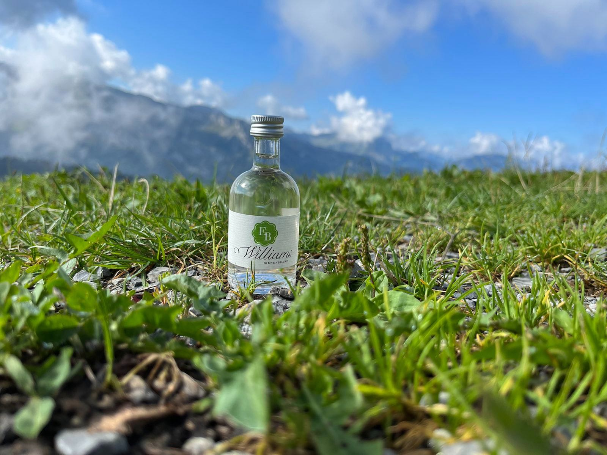
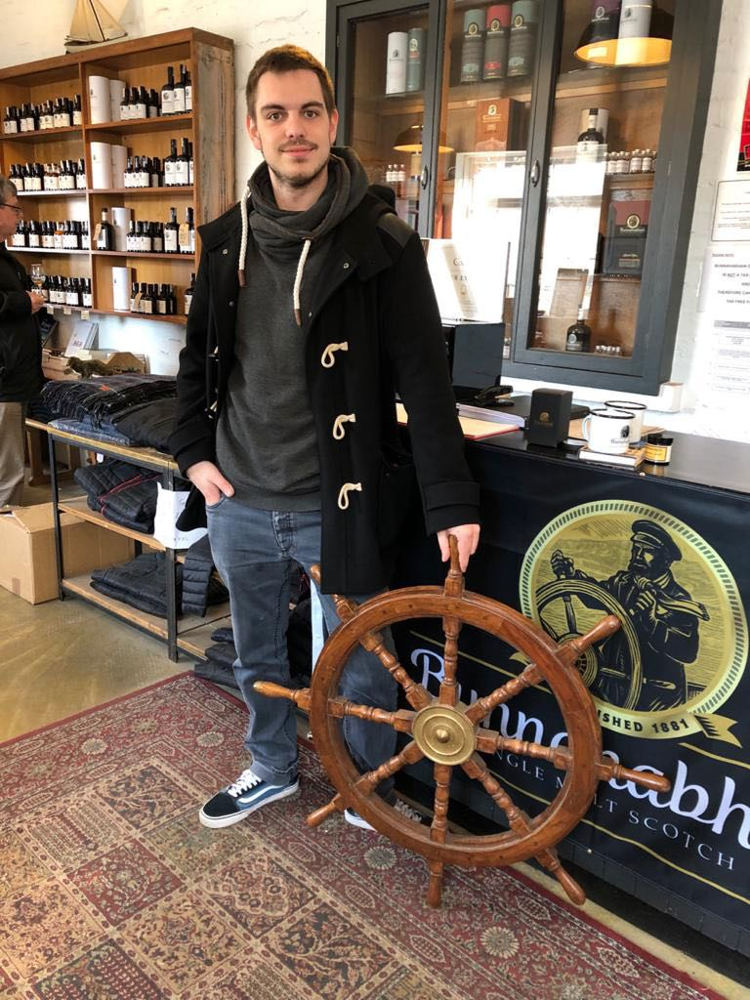
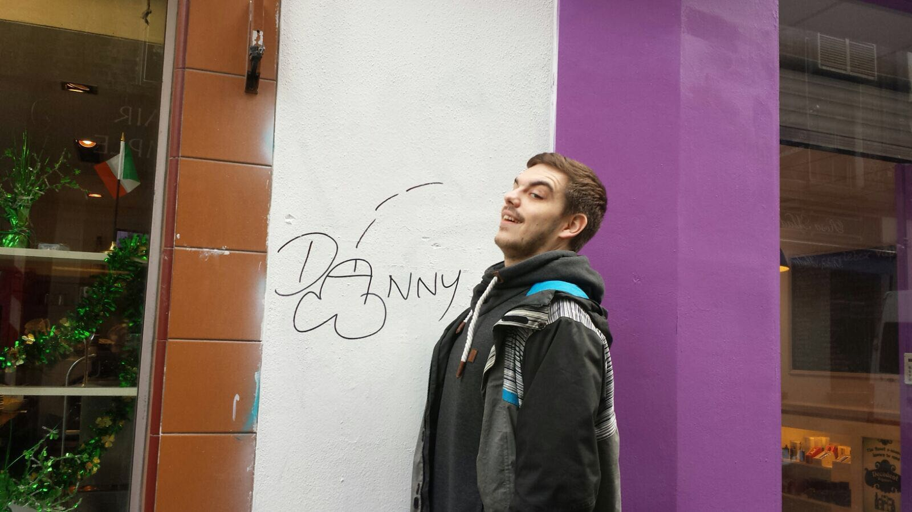

Guate gschicht. Was schribt ma so übr hobbies wenn ma zwunga würd? Ischd as übrhaupt hobbies odr hobbys?
Wurscht. Do einfach a paar bildr, segand jo mehr als Worte 😇
|

Bier war wieder in Aktion |

Ein Vogelhaus - oder... ? |

Like a boss 🐱 |
|

On tour |

Schottland '17. Long ago... |

NSFW |